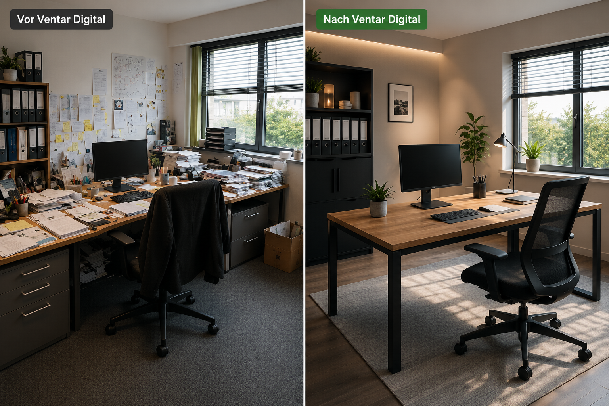

Vorschau: Diese Sektionen kämen auf der echten Seite direkt nach dem Kundenfeedback (Handy-Sektion).
Wer dahinter steht
Sie arbeiten direkt mit dem Gründer.
KI-Einführung ist Vertrauenssache. Deshalb gibt es bei uns keine wechselnden
Junior-Berater: Analyse, Workshop und Begleitung macht die Person, die Sie
im Erstgespräch kennenlernen.
12+ Unternehmen begleitet– vom Haustechnik-Betrieb bis zum Pflegedienst.
91+ Mitarbeiter geschult– vom KI-Einsteiger bis zum erfahrenen Anwender.
Spezialisiert auf den Mittelstand– für Teams ohne eigene KI- oder IT-Abteilung.
PG
Patrick GriffithsGründer, Ventar Digital
Der Einstieg
In drei Schritten zum Workshop
Kein Projektplan, kein Pflichtenheft. Der Einstieg kostet Sie ein Gespräch.
Kostenloses Erstgespräch
Wir sprechen über Ihr Unternehmen, Ihre Abläufe und wo KI realistisch Zeit spart. Sie bekommen eine ehrliche Einschätzung, auch wenn die lautet: noch nicht.
ca. 30 Minuten, unverbindlich
Analyse Ihrer Abläufe
Vor dem Workshop schauen wir uns Ihre typischen Aufgaben, Dokumente und Kommunikationswege an und bereiten Use Cases vor, die zu Ihrem Alltag passen.
auf Ihr Unternehmen zugeschnitten
Workshop & Umsetzung
Ihr Team lernt an den eigenen Aufgaben und geht mit fertigen Anwendungen raus. Danach begleiten wir die Umsetzung, bis KI im Alltag angekommen ist.
inkl. Nachbetreuung
Im Schnitt melden wir uns innerhalb eines Werktags zurück.
Preise
Workshops, die sich für Unternehmen auszahlen
Ein einmaliger Workshop als Fundament. Die laufenden Pakete nur, wenn Sie sie brauchen.
KI Einführung & Umsetzung
Für Teams, die den Einstieg einmal richtig machen wollen
3.199 €einmalig
Förderfähig für viele KMU (s. u.)
Individuelle Unternehmensanalyse vorab
Praxisnaher Live-Workshop mit Ihrem Team
Reale Anwendungen direkt im Workshop gebaut
Nachbetreuung & Fragen-Session
Meistgewählt
Laufende KI Begleitung
Für Teams, die dauerhaft am Ball bleiben wollen
499 €/ Monat
Monatlich kündbar
Monatliche Live-Sessions mit Ihrem Team
Neue Tools & Updates verständlich erklärt
Direkter Draht für Fragen zwischen den Terminen
Individuelle Use Cases weiterentwickeln
Interne Wissensdokumentation
KI Content & Sichtbarkeit
Für Unternehmen, die sichtbar werden wollen
699 €/ Monat
Monatlich kündbar
LinkedIn & Social-Media-Content
Newsletter & Texte
Kampagnenideen & Vorlagen
Monatliche Content-Strategie
Viele KMU können den Workshop über das Qualifizierungschancengesetz fördern lassen. Wir helfen bei der Antragstellung.
Amortisiert sich typischerweise in 4 bis 8 Wochen.
Ab hier: 3 bestehende Sektionen deiner Seite, überarbeitet zum Vergleich.
Der Beweis
Die Zahlen sprechen für sich.
0+Unternehmen begleitetVom Haustechnik-Betrieb bis zum Pflegedienst.
0+Mitarbeiter geschultVom KI-Einsteiger bis zum erfahrenen Anwender.
0 €Ersparnis pro Mitarbeiter und JahrBei 40 Minuten Zeitgewinn pro Tag und 30 € Stundensatz.
Woran es liegt
Die häufigsten Gründe.
Immer wieder dieselben Fehler. Und genau die lassen sich vermeiden.
01
KI einführen ohne klaren Plan
Ohne Strategie verpufft das Thema schnell wieder, schlichtweg weil keine konkreten Anwendungsfälle gefunden werden.
02
Mitarbeiter nicht einbinden
Widerstand und Desinteresse bremsen jede Initiative.
03
Nur technikaffine Kollegen schulen
Mitarbeiter, die etwas länger brauchen, werden liegen gelassen. Das Wissen kommt nicht bei allen an.
04
Einmalige Demo statt Begleitung
Nach dem Workshop fehlt die Umsetzung im Alltag und bei kleinen Problemen wird schnell aufgegeben.
Außerdem häufig
05
Falsche Tool-Auswahl
Man kauft das erstbeste KI-Tool, ohne zu prüfen, ob es zum Team passt.
06
Datenschutz ignoriert
Mitarbeiter nutzen KI unkontrolliert mit sensiblen Firmendaten.
07
Kein Pilotprojekt
Direkt unternehmensweiter Rollout statt kleinem Test zuerst.
Ergebnisse
Was sich bei unseren Kunden verändert hat
Das hier sind die am stärksten spürbaren Veränderungen, jeweils vorher und heute.

78%
der KI-Einführungen scheitern.
Es liegt weder an der Technologie noch an mangelndem Wissen.
Viel Aufwand. Kein Fortschritt.
Ohne klare Struktur drehen sich Teams im Kreis: Tools werden ausprobiert, wieder verworfen und am Ende bleibt alles beim Alten.
Anwendungen
So wird KI im Unternehmen praktisch genutzt
Keine theoretischen Konzepte. Reale Anwendungen, die in Ihrem Unternehmen täglich Zeit sparen.
Ehrliche Einordnung
Für wen das passt und für wen nicht
Wir arbeiten lieber mit den richtigen Unternehmen als mit möglichst vielen.
Das Programm passt, wenn Sie …
ein Team zwischen 5 und 100 Mitarbeitern haben, das täglich mit E-Mails, Dokumenten oder Angeboten arbeitet
wollen, dass alle Mitarbeiter KI nutzen können, nicht nur die Technikaffinen
Wert auf Datenschutz legen und wissen wollen, was ins Tool darf und was nicht
nach dem Workshop eigenständig weiterarbeiten wollen, ohne Dauer-Beratervertrag
Es passt nicht, wenn Sie …
eine fertige Software kaufen wollen, statt Ihr Team zu befähigen
erwarten, dass KI ohne jede Einarbeitung sofort alles automatisiert
niemanden im Team haben, der sich um die Umsetzung kümmern darf
eine individuelle Softwareentwicklung suchen, das machen wir nicht
Unsicher, wo Sie stehen? Genau dafür ist das kostenlose Erstgespräch da.